Boundary loss for highly unbalanced segmentation
Csurka, G., Larlus, D., & Perronnin, F. (2013). What is a good evaluation measure for semantic segmentation? BMVC.
(218 Citations.)
Kervadec, H., Bouchtiba, J., Desrosiers, C., Granger, É., Dolz, J., & Ayed, I.B. (2019). Boundary loss for highly unbalanced segmentation. Medical image analysis, 67, 101851 .
(95 Citations)
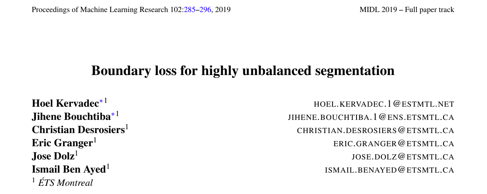
- 论文 PDF : https://openreview.net/pdf?id=S1gTA5VggE 或者（https://arxiv.org/pdf/1812.07032.pdf）
- 期刊：Medical Imaging with Deep Learning (MIDL 2019 Conference), best paper award at MIDL 2019.
- 作者的 Presentation：https://www.bilibili.com/video/BV1U4411F76a（3:29:00 开始）
- source code：https://github.com/LIVIAETS/boundary-loss/blob/master/losses.py
0 Abstract
Dice loss 和 cross-entropy 这种区域损失在类别高度不平衡的分割任务中，会影响到训练性能和稳定性。本篇论文提出了一种边界损失（boundary loss），其形式是轮廓（或形状）空间上的距离度量，而不是区域，
- 这可以减轻在高度不平衡的分割问题中区域损失的困难；
- 此外，边界损失提供的信息是对区域损失的补充。
在计算时，将形状空间上的非对称 L2 距离表达为区域积分，这就产生了一个用网络的区域 softmax 概率输出表示的边界损失，它可以很容易地与标准的区域损失相结合。
在 the ischemic stroke lesion (ISLES) and white matter hyperintensities (WMH) 这两个高度不平衡数据集上，Dice + boundary 相比于单独使用 Dice，其 Dice score 提升了 8%。
💢TODO：眼底视网膜分割数据集（DRIVE/CHASE_DB1），或许也可以归为不平衡的数据集，使用 Dice Loss + 本篇论文的 boundary loss 或许可以在原基础之上提升最后的性能，可以简单试一下实验结果。
##1 Introduction
Dice or cross-entropy 都基于基于区域积分（regional integrals），这对训练深度神经网络很方便。
标准区域损失包含前景和背景项，它们的值有很大差异，通常是几个数量级，这可能会影响性能和训练的稳定性，这在医学图像分析中相当常见。
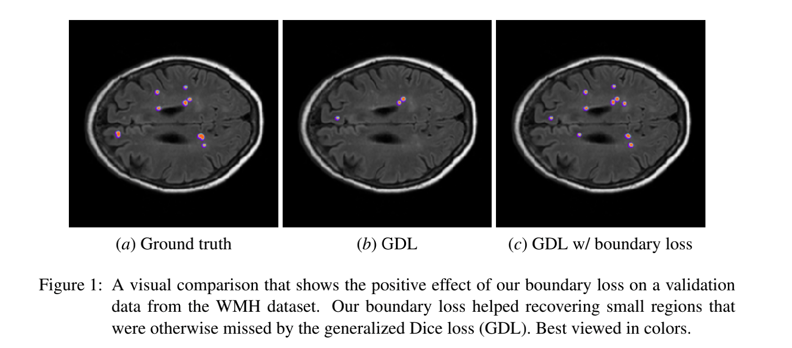
交叉熵
在高度不平衡的问题上，标准的区域 交叉熵（CE）有众所周知的缺点：
- 它假定所有样本和类别的重要性分布是相同的；
- CE 通常会导致不稳定的训练，并导致决策边界偏向于大多数类别。
常见的缓解类别不平衡策略：
- re-balance class prior distributions by down-sampling frequent labels.
- assign weights to the different classes, inversely proportional to the frequency of the corresponding labels.
Dice
Lee Raymond Dice 命名
VNet 应用 Dice Loss
Dice coefficient 等同 F1 score。Dice Loss 一种能够直接作用于 F1 Score 的损失函数。
- 在处理非常小的结构时可能会遇到困难，训练不稳定；
- Dice 对应于精确度和召回率之间的谐波平均值，这种损失主要适合于 FP 和 FN 同样糟糕的时候。
相比于 Dice 存在的缺点，Tversky 相似度指数可以在精确度和召回率之间提供一个更好的权衡。
✅ Dice loss 比较适用于样本极度不均的情况，一般的情况下，使用 Dice loss 会对反向传播造成不利的影响，容易使训练变得不稳定。
论文贡献：
In this paper, we propose a boundary loss that takes the form of a distance metric on the space of contours (or shapes), not regions.
We argue that a boundary loss can mitigate the issues related to regional losses in highly unbalanced segmentation problems. Rather than using unbalanced integrals over the regions, a boundary loss uses integrals over the boundary (interface) between the regions.
Furthermore, it provides information that is complimentary to regional losses.
2. Formulation
对于两个区域的情况，一般形式的积分：
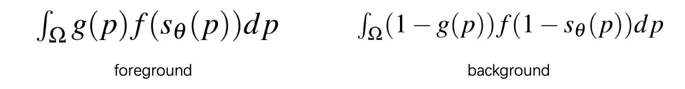
$$f = -log(\cdot)$$
广义 Dice 损失（GDL）：
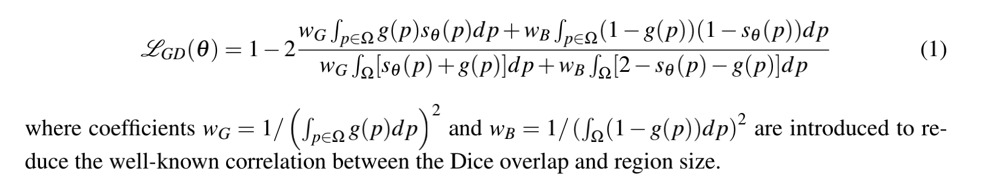
- Ω 表示具有空间域的训练图像
- g 表示对图像进行二进制的 Ground Truth 分割，g(p) = 1 表示像素 p 属于目标区域 G⊂Ω（前景区域），否则为 0 Ω\G（背景区域）
- $s_\theta$ 表示分割网络的 softmax 概率输出
广泛使用的分割损失函数涉及 Ω 中每个分割区域的区域积分，它衡量网络的概率输出所定义的区域与相应的地面实况之间的一些相似性（或重叠）。
在医学图像分析中，极不平衡的分割非常常见，例如，目标前景区域的大小比背景大小小几个数量级，如此之大的差异影响了分割的性能和训练的稳定性。
Boundary Loss Dist($∂_G, ∂_{S_\theta}$ )：$∂_G$ 表示区域 G 的 Ground Truth 边界，$∂_{S_θ}$表示由网络输出定义的分割区域 G 的边界。
- （1）边界损失应该能够减轻上述不平衡分割的困难：它使用区域之间的边界的积分。此外，边界损失提供的信息与区域损失不同，因此是补充性的。
- （2）并不清楚如何将 $∂_{S_θ}$ 上的边界点表示为区域网络输出 sθ 的可微调函数。（我的理解是：Boundary Loss 单独使用并不 work，无法使用反向传播更新）
本篇论文提出的 Boundary Loss 启发自 discrete (graph-based) optimization techniques for computing gradient flows of curve evolution (Boykov et al., 2006). curve evolution methods 需要一个评估边界变化（或变化）的措施。
Boundary Loss Dist($∂_G, ∂_{S_\theta}$ )：评估两个附近边界 ∂S 和 ∂G 之间的变化（Boykov 等人，2006）。
💢为什么 (2) 不能直接作为 Loss 进行优化？理解了这个很重要！
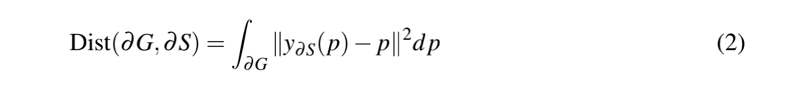
- p∈Ω 是边界 ∂G 上的一个点
- y∂S(p) 表示边界 ∂S 上的相应点（法线方向交点）。
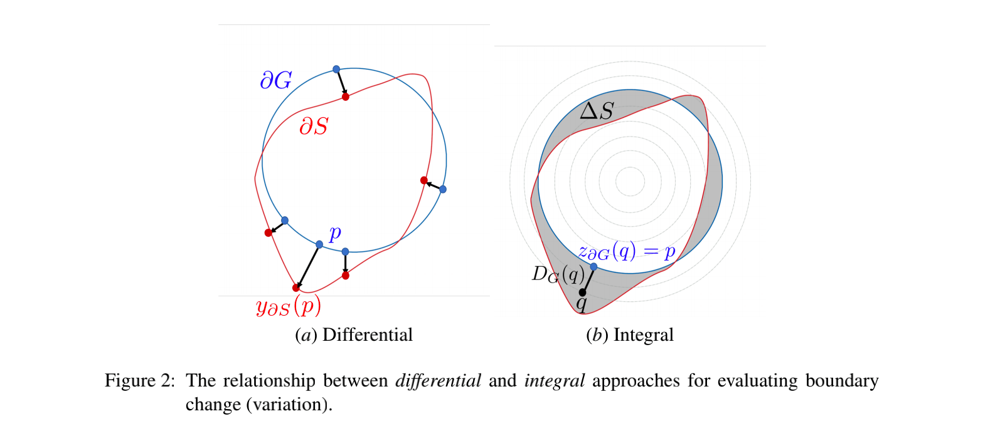
公式 (2) 不能直接作为 ∂S= ∂Sθ 的损失！！！
✅ 很容易表明，(2) 中的微分边界变化可以用积分方法来表达 (Boykov 等人，2006)，积分方法完全避免了涉及轮廓点的局部微分计算，并将边界变化表示为一个区域积分。得到公式 (3)。
it is easy to show that the differential boundary variation in (2) can be expressed using an integral approach (Boykov et al., 2006), which avoids completely local differential computations involving contour points and represents boundary change as a regional integral:
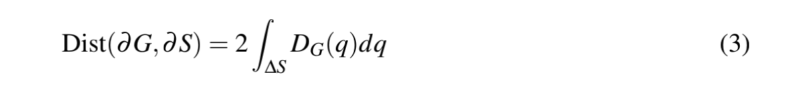
其中，∆S 表示两条轮廓线之间的区域，DG : Ω→R+ 是相对于边界 ∂G 的距离图，即 $D_G(q)$ 评估了点 q∈Ω 与轮廓 ∂G 上最近的点 $z_{∂G}(q)$ 之间的距离。
将 instance map $2D_{G}(q)$ 在连接 ∂G 上的点 p 和 $y_{∂S}(p)$ 的法线段上积分，就可以得到：
因此，从公式（3）来看，公式（2）中轮廓线之间的非对称 L2 距离可以表示为基于边界 ∂G 的 level set 表示的区域积分之和。
❓什么是 level set？
- s : Ω→{0,1} 是区域 S 的 binary indicator function，如果 q∈S 属于目标，s(q)=1，否则为 0。
- $\phi_G$ : Ω→R 表示边界 ∂G 的 level set 表示，如果 q∈G，$\phi_{G}(q)=-D_G(q)$，否则 $\phi_G(q)=D_G(q)$。
approximates boundary distance Dist(∂G,∂Sθ ):
容易与标准的区域损失相结合：
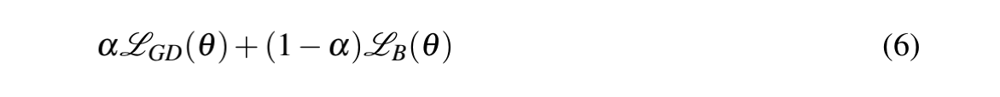
Experiment
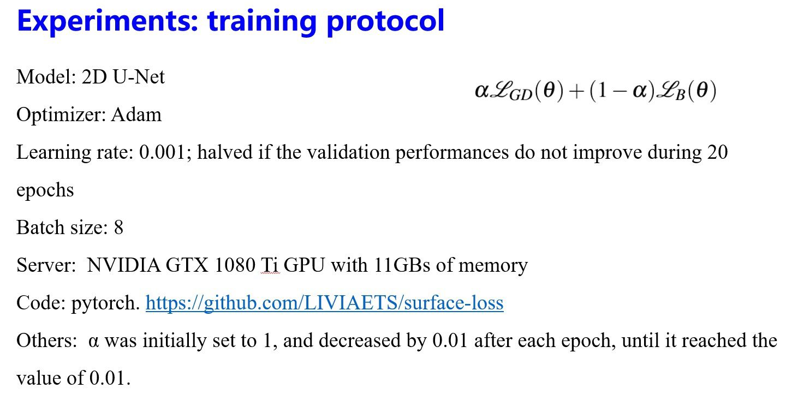
- Dice 相似系数（Dice Similariy Coefficient,DSC），取值范围 [0, 1]，1 为最好，0 为最差。
- Hausdorff Distance 豪斯多夫距离：以集合 A 中任一点，半径取 HD 画圆，可以包含集合 B 的所有点。
boundary loss term brings a DSC improvement of around 2% on the WMH dataset, it achieves 8% better DSC on the ISLES segmentation task. The same trend is observed with the HD metric, where the gain is larger on the ISLES dataset than on WMH.
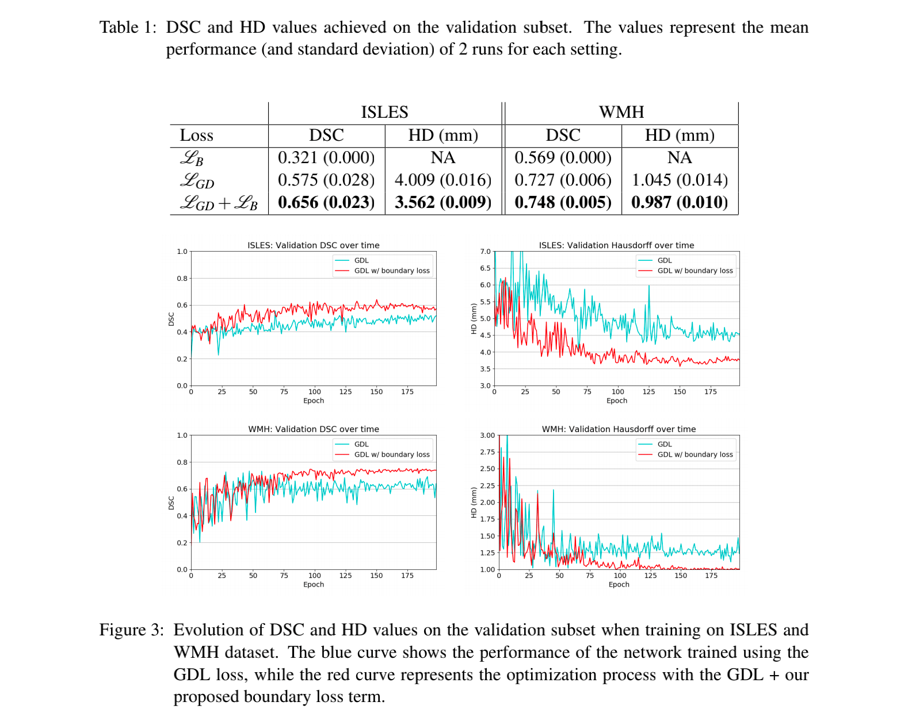
边界损失项有助于稳定训练过程，随着网络训练的收敛，产生了一个更平滑的曲线。Boundary Loss 只涉及两个矩阵之间的元素相乘，所增加的计算复杂度几乎可以忽略不计。
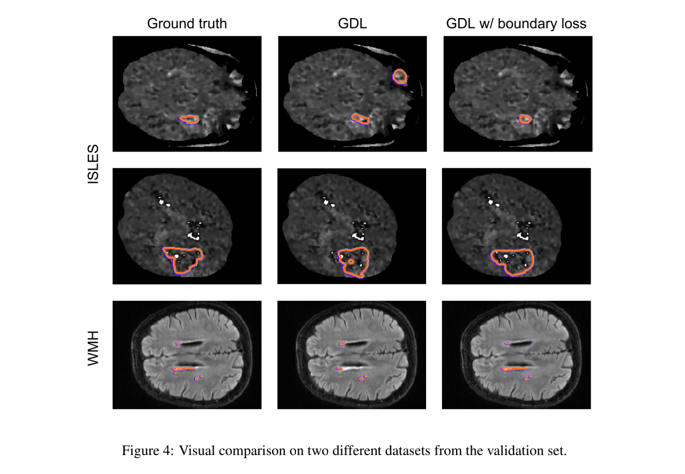
总结
•单独使用 Boundary Loss 不 work，一般进行与 Dice 组合使用。
•理论上，边界损失的全局最优对应于一个负值，因为一个完美的重叠只对距离图的负值进行求和。
•边界损失项有助于稳定训练过程，随着网络训练的收敛，产生了一个更平滑的曲线
•使用 Boundary Loss 带来的计算量几乎可以忽略不计。
•利用了 S 和 G 空间上的一些信息，带来了一定的性能提升。
•作者做得实验太少， Boundary Loss 是否能普遍提升 performance 还需要更多的实验验证。